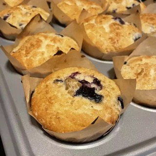

Best of the Best Blueberry Muffins
Big Blueberry muffins with a crusty sugar topping. A recipe I got from my Grandma. The blueberries and the sweet batter are fabulous together. Favorites of all who have tried them. Quick and easy, made with few ingredients. Remember to use paper liners!
Ingredients
- 1/2 cup unsalted butter
- 1 1/4 cups white sugar
- 1/2 teaspoon salt
- 2 eggs
- 2 cups flour
- 2 teaspoons baking powder
- 1/2 cup buttermilk
- 1 pint fresh blueberries
Instructions:
- Position rack in the middle of oven. Preheat oven to 375 degrees F (190 degrees C). Spray the top of a muffin pan with non-stick coating, and line with paper liners.
- In a large bowl, cream together the butter, 1 1/4 cups sugar and salt until light and fluffy. Beat in the eggs one at a time. Mix together 1 3/4 cup of the flour and baking powder. Beat in the flour mixture alternately with the buttermilk, mixing just until incorporated. Crush 1/4 of the blueberries, and stir into the batter. Mix the rest of the whole blueberries with the remaining 1/4 cup of the flour, and fold into the batter. Scoop into muffin cups. Sprinkle tops lightly with sugar.
- Bake in preheated oven for 30 minutes, or until golden brown, and tops spring back when lightly tapped.
Back to top
Back to home page